01 / BRAND & EXPERIMENTAL VISUAL
GENTLE MONSTER
以镜观骨，以虫观我我们身处一个“感知折叠”的超现实空间：这里的万物都由“可见表象”与“内在骨架”双重构成，而「虫形生物」是穿梭于两个维度的「感知信使」。
- CONCEPT
- 折叠的维度 / 先锋个性大冒险
- VISUAL SYSTEM
- 主视觉 · 字体 · 色彩 · 产品延展
- APPLICATION
- 首饰 · 镜架 · 门店陈列

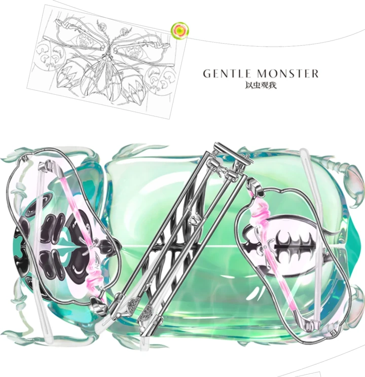
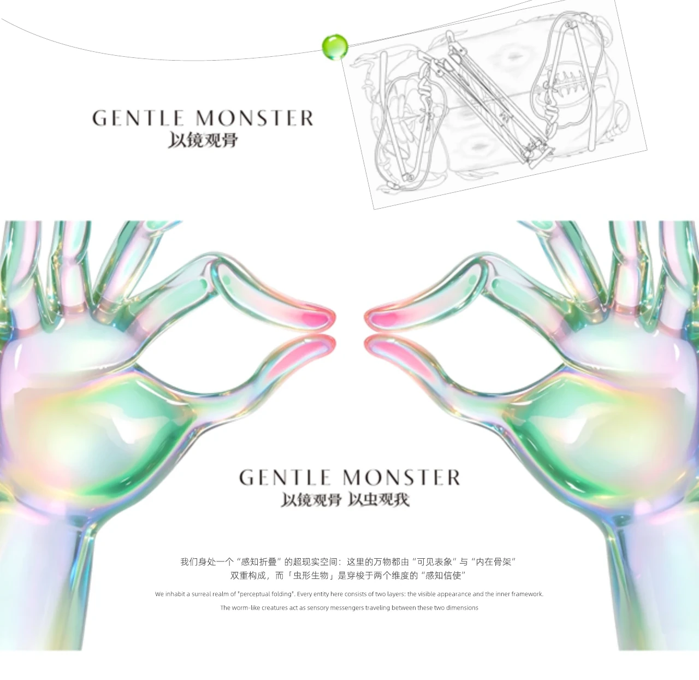
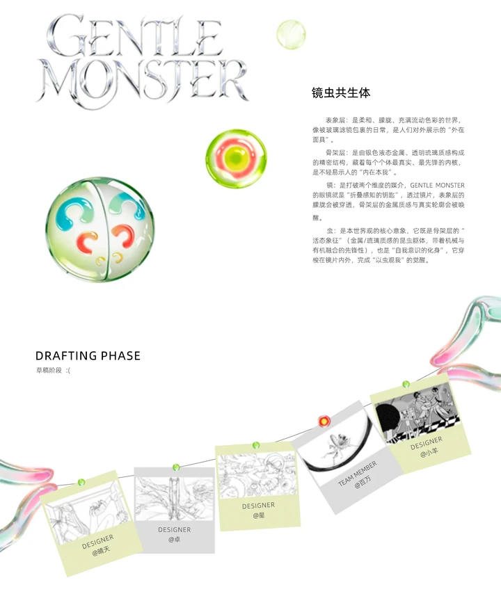
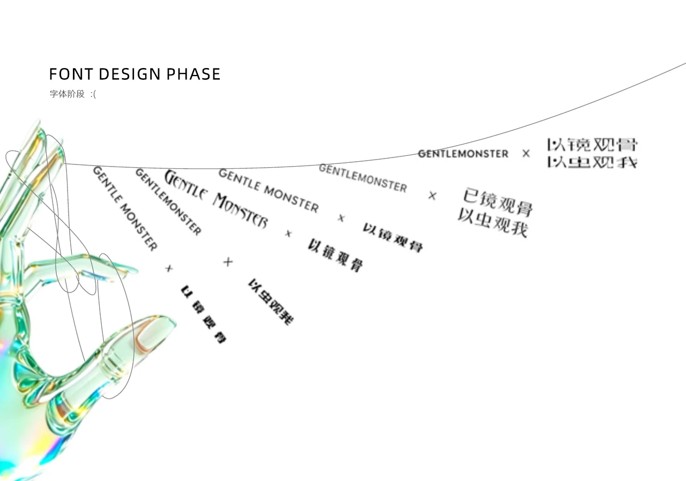
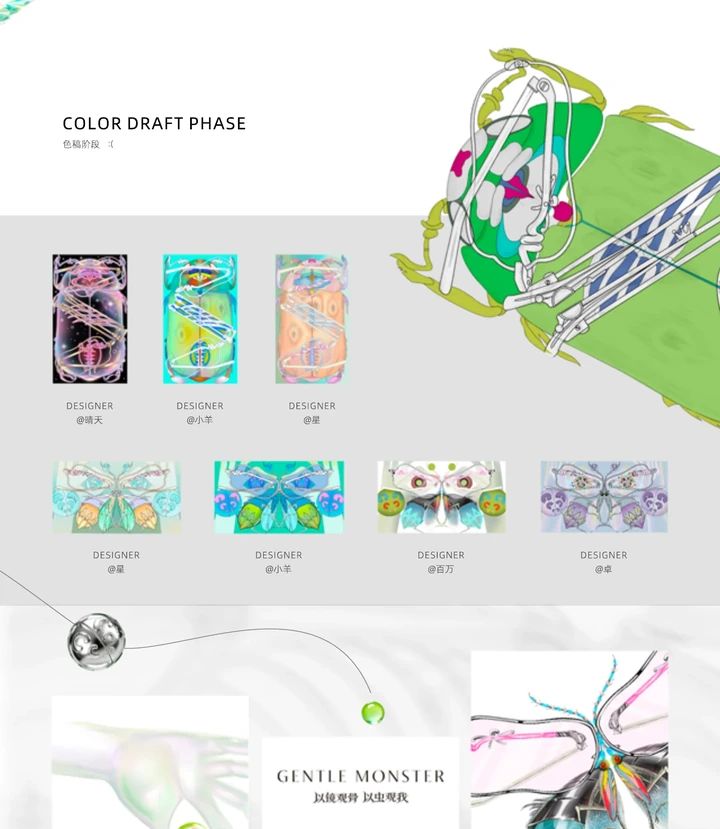
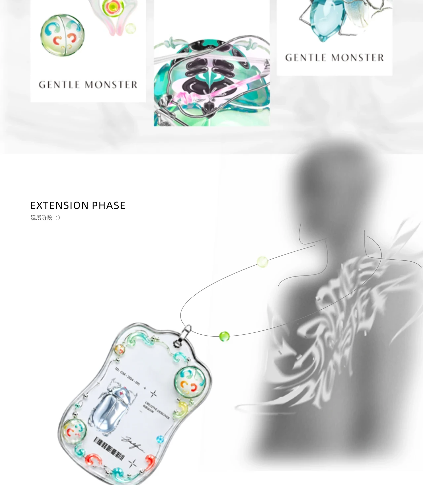
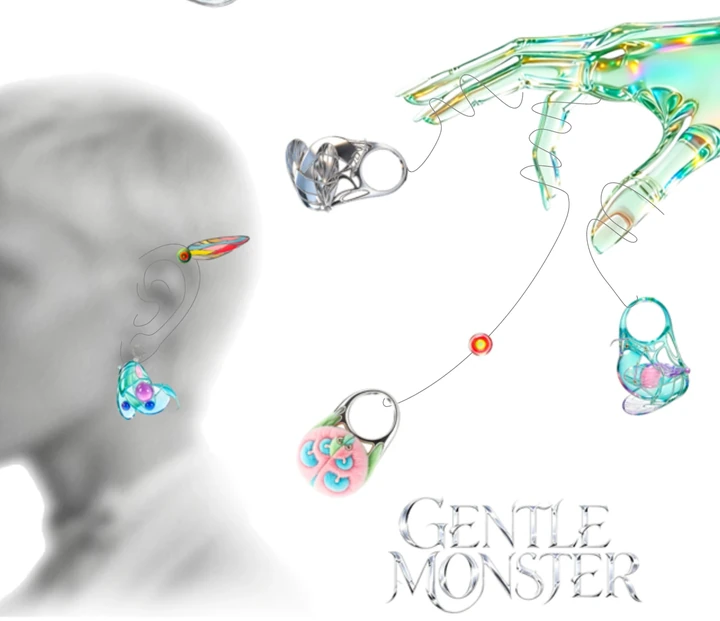
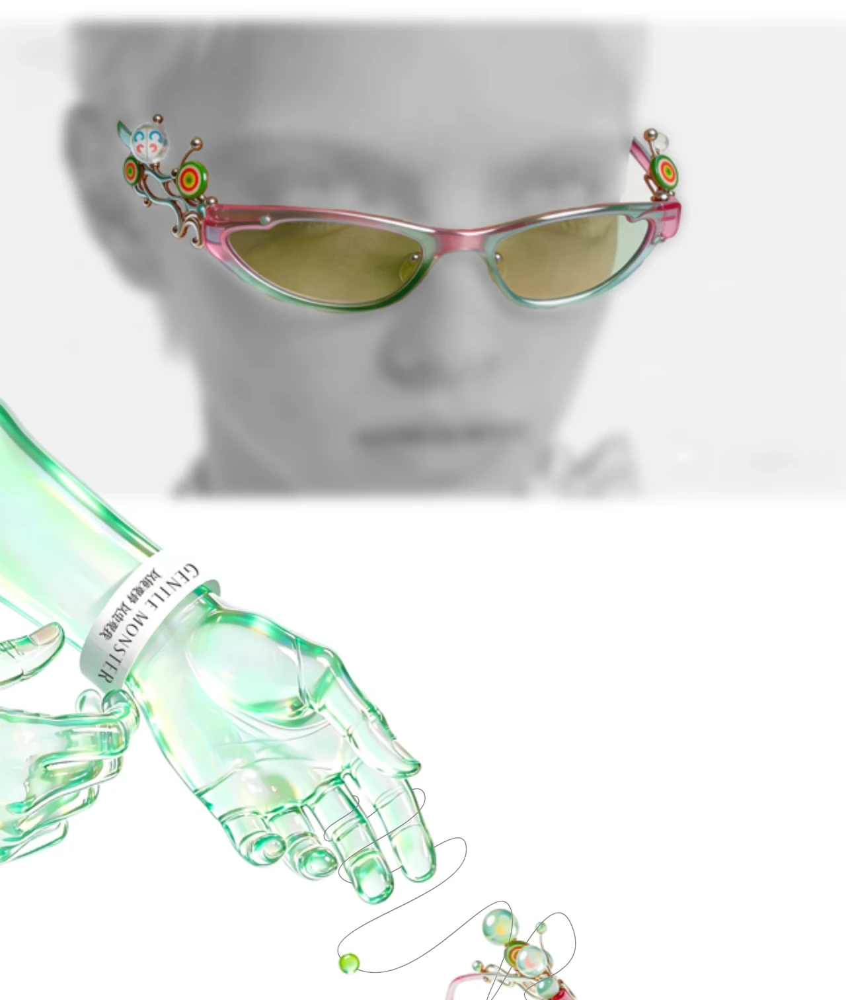
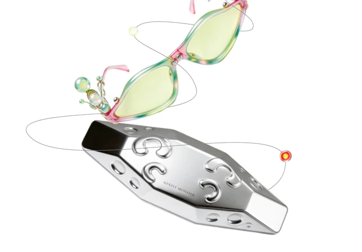
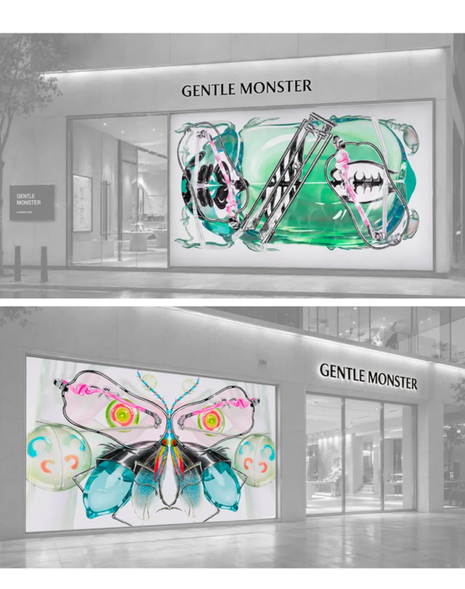
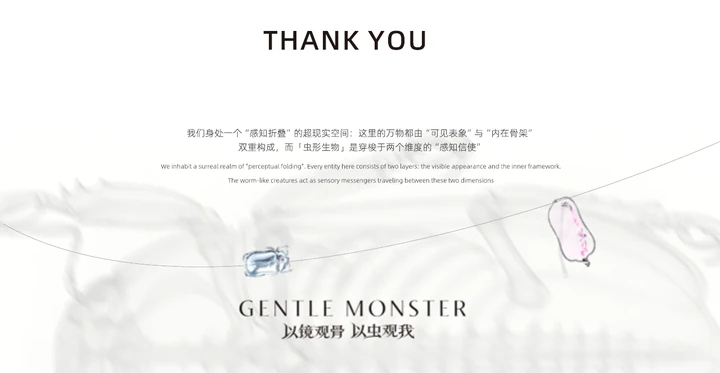
03 / CONTENT & COMMUNITY
让真实生活，
长成内容与产品。
独立运营三个小红书账号：一个从低预算居住切入生活审美，一个持续生产原创角色与手作内容， 另一个承接文创产品、上新与集市沟通。数据不只比较粉丝量，也看收藏、评论与产品意向能否形成一条完整路径。
DATA SNAPSHOT / 2026.10.29
从生活洞察到原创角色，再到产品承接。
LOW-BUDGET LIVING
低成本，
也可以很有审美。
从租房、小房间布置和便宜好物切入，把预算限制转化为具体、可信的生活方案。 实拍不追求样板间式精致，而用真实使用痕迹和取舍建立亲近感。
ORIGINAL CHARACTER & MERCH
把角色，
做成真实产品。
用高饱和色彩、涂鸦线条与大眼睛角色形成稳定识别，再把插画延伸到签绘、书签、 便签和主题上新。投票与体验官招募让受众参与选择，缩短作品与产品之间的距离。
CHARACTER GOODS & MARKET
让角色，
走进真实生活。
“氧氧商店”用菜单、头像、壁纸、签绘和上新把角色转成可购买、可预约的内容。 简介明确连接插画主号，并以“集市邀请私戳”承接线下合作。
CROSS-ACCOUNT READOUT / 三号联动
三种内容结果，
组成一条路径。
公开数据显示，约 96.3% 的粉丝和 88.2% 的内容集中在“糖醋折耳根”， 它承担主内容资产；生活号负责验证爆款选题，商店号负责产品承接与需求测试。
发现需求
“永不过期白切鸡”14 篇可见笔记的点赞合计为 2600，其中单篇占 2062。均值被爆款拉高，中位数仍约 31 赞，说明账号具备单点爆发力，但长尾互动尚未形成稳定底盘。
计算：2062 ÷ 2600；中位数按 14 篇主页可见点赞排序。建立记忆
“糖醋折耳根”以 216 篇内容累计约 3.5 万赞藏，折算约每篇 162 次赞藏。持续体量与稳定画风让账号更像内容资产，而不是依赖一次偶发爆款。
计算使用平台四舍五入后的“3.5万”展示值，仅用于量级判断。验证购买
“氧氧商店”代表笔记为 34 赞、9 条评论，评论数达到点赞数的 26.5%；评论中直接出现签绘供应询问，说明内容不仅停留在“可爱”，已触发具体产品问题。
计算：9 ÷ 34。单篇样本量较小，结论为阶段性需求信号。方法说明：粉丝、笔记与赞藏均读取小红书公开主页；互动数据读取对应笔记页面。不同时间的流量波动、推荐分发和平台四舍五入都会影响结果，因此本页不做跨行业排名，只用于判断内容方向与运营分工。
下一阶段不必把三个账号做成同一种内容，而应让它们各自承担明确任务：生活号继续验证“高收藏、可执行”的选题； 插画号稳定输出角色、过程和人格，积累可识别的视觉资产；商店号则集中承接上新、价格、购买路径和集市合作。 这样既保留三种不同的内容语气，也让流量从兴趣自然走向产品或合作。
CONTENT TEARDOWN / 单篇拆解
数据背后，
做对了什么？
选择三篇代表性内容，将页面截图与结果数字并置。指标读取于公开页面， “赞与收藏”按平台展示口径记录，单篇数据只代表对应内容，不作为账号均值。
HIGH-SAVE CONTENT
把“便宜”
做成生活方案。
标题先说出用户顾虑，正文逐项解释被套、柜子、灯具和床品的价格、缺点与使用逻辑。 不是单纯种草，而是把选择标准摊开，所以收藏接近点赞的 38%。
把生活记录做成可搜索、可保存、可执行的决策内容。
COMMUNITY AS CO-CREATOR
不假装精致，
让创作被看见。
这条内容主动讨论铅笔线条、制品清晰度与个人辨识度之间的冲突。 真实困惑换来风格建议、共鸣和继续追问，让角色作品之外多了一层“和作者一起想”的关系。
把作品展示变成创作过程，让评论成为下一轮内容的素材。
PRODUCT INTENT & COMMUNITY
从“可爱”，
到具体产品问题。
“线上菜单来啦”用产品目录式画面集中呈现贴纸、签绘和角色周边，正文只写“请食用！”并配手账标签。 评论区出现签绘供应询问，说明内容已经开始承担产品介绍与需求验证，而不只是作品曝光。
把角色视觉转成商品目录，让评论沉淀下一轮上新与备货信息。
OPERATING METHOD
不是发图，
是持续编辑。
从选题、画面到评论回应，账号被当作一本持续更新的视觉刊物：每一篇有独立入口，也在共同构建一个稳定的人格。
聊聊内容合作 ↗内容策划
从生活痛点找到具体选题，用标题、图片和正文建立清楚的内容入口。
✎账号视觉
以稳定的色彩、文字和角色语言，让不同内容被识别为同一个作者。
◎社群互动
用真实经验、提问和选择收集反馈，让互动继续推动产品与下一轮内容。
↗LIVE HERE